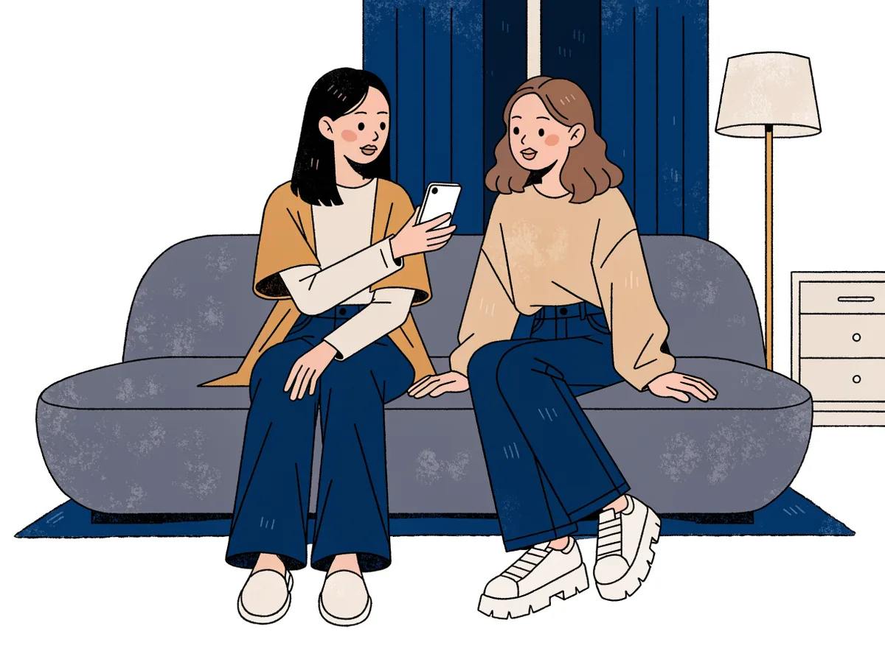
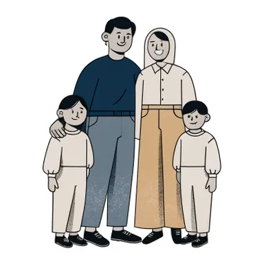
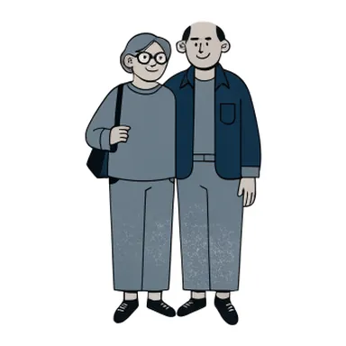
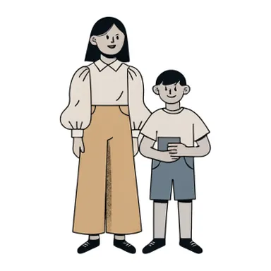
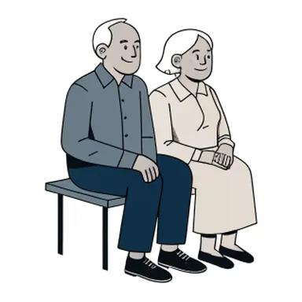
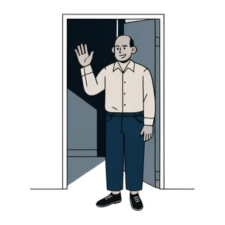
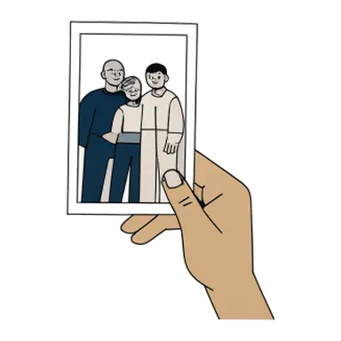

배우기 전에 먼저 해 보세요. 틀려도 괜찮아요.
'제 어머니'는 독일어로 어떻게 말할까요?
Mutter는 여성 명사라서 mein에 -e가 붙어요.
'저는 서른 살이에요'는 독일어로 어떻게 말할까요?
나이는 sein과 Jahre alt로 말해요.

조금 친해지면 가족 이야기가 나와요. Jiu는 Lena에게 가족 사진을 보여 주고, Dohyun은 점심시간에 Markus와 아이들 이야기를 해요.
문법 haben, Possessivartikel (mein, dein, Ihr, sein, ihr), Plural
과제대학같이 사는 친구에게 가족 사진을 보여 주며 소개하기
과제직장점심시간에 동료와 가족 이야기 나누기
이 과를 마치면 사진을 보며 가족과 주변 사람을 소개하고 나이와 사는 곳을 말할 수 있어요.
이 과에서 쓸 말이에요. 눌러서 먼저 들어 보세요.
배우기 전에 먼저 해 보세요. 틀려도 괜찮아요.
'제 어머니'는 독일어로 어떻게 말할까요?
Mutter는 여성 명사라서 mein에 -e가 붙어요.
'저는 서른 살이에요'는 독일어로 어떻게 말할까요?
나이는 sein과 Jahre alt로 말해요.
Lektion 2의 낱말 다섯 개를 다시 떠올려 보세요.
주말 저녁, WG 거실이에요. Jiu가 Lena에게 휴대폰 속 가족 사진을 보여 줘요.
들으면서 찾아보세요. Jiu의 남동생은 어디에 사나요?
점심시간, 회사 식당이에요. Markus와 Dohyun이 가족 이야기를 해요.
들으면서 찾아보세요. Markus의 아이들은 몇 살인가요?
수업이 끝난 뒤예요. Frau Becker가 Sora에게 가족에 대해 물어요.
들으면서 찾아보세요. Sora의 딸은 몇 살인가요?
세 대화를 듣고 답하세요.
Jiu의 남동생 Junho는 어디에 사나요?
Jiu hat eine Schwester.
Jiu는 남동생만 한 명 있어요.
Lena는 형제자매가 어떻게 되나요?
Dohyun ist verheiratet.
Dohyun의 아들은 몇 살인가요?
Markus hat zwei Kinder.
Sora의 딸 Hana는 몇 살인가요?
Sora의 남편은 무슨 일을 하나요?
낱말 33개예요. 낱말이나 예문 앞의 단추를 누르면 소리가 나요. 명사는 der, die, das를 색으로 구분했어요.

die Familie, die Familien 가족
Meine Familie wohnt in Seoul.우리 가족은 서울에 살아요.

die Eltern (Pl.) 부모
Meine Eltern wohnen in Korea.우리 부모님은 한국에 사세요.
der Vater, die Väter 아버지
Mein Vater heißt Sangho.아버지 성함은 상호예요.
die Mutter, die Mütter 어머니
Meine Mutter ist Lehrerin.어머니는 교사예요.
der Bruder, die Brüder 남자 형제 (형, 오빠, 남동생)
Mein Bruder studiert in Busan.남동생은 부산에서 대학에 다녀요.
die Schwester, die Schwestern 여자 형제 (누나, 언니, 여동생)
Lena hat zwei Schwestern.Lena는 언니가 두 명 있어요.

die Geschwister (Pl.) 형제자매
Hast du Geschwister?형제자매가 있어요?
der Mann, die Männer 남편, 남자
Mein Mann ist Informatiker.남편은 컴퓨터 전문가예요.
die Frau, die Frauen 아내, 여자
Meine Frau heißt Sujin.아내 이름은 수진이에요.
das Kind, die Kinder 아이
Wir haben zwei Kinder.우리는 아이가 둘이에요.
der Sohn, die Söhne 아들
Mein Sohn ist fünf Jahre alt.아들은 다섯 살이에요.
die Tochter, die Töchter 딸
Meine Tochter heißt Hana.딸 이름은 하나예요.

die Großeltern (Pl.) 조부모
Meine Großeltern wohnen in Daegu.조부모님은 대구에 사세요.
der Partner, die Partner 함께 사는 사람, 애인 (남자)
Das ist mein Partner Jonas.제 파트너 Jonas예요.
die Partnerin, die Partnerinnen 함께 사는 사람, 애인 (여자)
Meine Partnerin kommt aus Wien.제 파트너는 빈 출신이에요.
der Freund, die Freunde 친구 (남자), 남자 친구
Carlos ist ein Freund von Jiu.Carlos는 Jiu의 친구예요.
die Freundin, die Freundinnen 친구 (여자), 여자 친구
Lena ist meine Freundin.Lena는 제 친구예요.
der Mitbewohner, die Mitbewohner 한집에 같이 사는 사람 (남자)
Mein Mitbewohner heißt Tim.같이 사는 사람 이름은 Tim이에요.
die Mitbewohnerin, die Mitbewohnerinnen 한집에 같이 사는 사람 (여자)
Lena ist meine Mitbewohnerin.Lena는 저와 같이 살아요.

der Nachbar, die Nachbarn 이웃 (남자)
Mein Nachbar ist sehr nett.이웃이 아주 친절해요.
die Nachbarin, die Nachbarinnen 이웃 (여자)
Meine Nachbarin heißt Frau Krüger.이웃 이름은 Frau Krüger예요.

das Foto, die Fotos 사진
Das ist ein Foto von Hana.하나의 사진이에요.
die Schule, die Schulen 학교
Hana lernt Deutsch in der Schule.하나는 학교에서 독일어를 배워요.
haben (du hast, er hat) 가지고 있다, ~이 있다
Ich habe einen Bruder.저는 남자 형제가 한 명 있어요.
verheiratet 결혼한
Sind Sie verheiratet?결혼하셨어요?
ledig 미혼인
Mein Bruder ist ledig.남동생은 미혼이에요.
alt 나이가 ~인, 오래된
Wie alt ist Ihre Tochter?따님은 몇 살이에요?
das Jahr, die Jahre 해, 년, ~살
Sie ist acht Jahre alt.그 애는 여덟 살이에요.
nett 친절한
Die Lehrerin ist sehr nett.선생님이 아주 친절해요.
sehr 아주
Das Foto ist sehr schön.사진이 아주 멋져요.
süß 귀여운, 단
Deine Kinder sind sehr süß!아이들이 정말 귀엽네요!
dort 거기
Er studiert dort.그는 거기서 대학에 다녀요.
noch 아직
Sie ist noch in Korea.그녀는 아직 한국에 있어요.
이 과의 낱말로 여덟 문제를 풀어요.
규칙
haben은 가족, 물건, 시간이 '있다'고 말할 때 써요. du와 er, sie에서는 b가 빠져서 du hast, er hat이 돼요.
| haben | sein | |
|---|---|---|
| ich | habe | bin |
| du | hast | bist |
| er, sie | hat | ist |
| wir | haben | sind |
| ihr | habt | seid |
| sie, Sie | haben | sind |
주의 나이는 haben이 아니라 sein으로 말해요. Ich bin 30 Jahre alt.가 맞아요. Ich habe einen Bruder, eine Schwester, keine Geschwister.는 지금은 통째로 익혀요. einen과 keine는 4과에서 배워요.
규칙을 보고 바로 확인해 보세요.
du가 주어일 때 haben은 어떤 모양인가요?
규칙
남성 명사와 중성 명사 앞에서는 mein, 여성 명사와 복수 명사 앞에서는 끝에 -e를 붙여 meine라고 해요. dein, Ihr, sein, ihr도 똑같이 바뀌어요.
| 누구의 | 남성, 중성 | 여성, 복수 |
|---|---|---|
| ich | mein Vater | meine Mutter |
| du | dein Vater | deine Mutter |
| Sie | Ihr Vater | Ihre Mutter |
| er | sein Vater | seine Mutter |
| sie | ihr Vater | ihre Mutter |
주의 sein은 남자의 것, ihr는 여자의 것이에요. 뒤에 오는 명사가 아니라 가진 사람을 보고 골라요. Markus의 딸은 seine Tochter, Sora의 남편은 ihr Mann이에요. 대문자로 쓰는 Ihr는 Sie를 쓰는 상대의 것이에요. 문장 첫머리에서는 '그녀의' ihr도 대문자로 쓰니 앞뒤 내용으로 구별해요.
규칙을 보고 바로 확인해 보세요.
Mutter, Tochter 같은 여성 명사 앞에서는 어떤 모양을 쓰나요?
규칙
독일어 명사는 낱말마다 복수 모양이 달라요. 끝에 -e, -n, -er, -s가 붙거나 모음이 ä, ö, ü로 바뀌어요. 그래서 사전과 이 교재는 der Bruder, die Brüder처럼 단수와 복수를 함께 보여 줘요. 복수의 관사는 언제나 die예요.
| 모양 | 단수 | 복수 |
|---|---|---|
| -e | der Freund | die Freunde |
| -n, -en | die Schwester, die Frau | die Schwestern, die Frauen |
| -er | das Kind | die Kinder |
| 모음이 바뀜 | der Bruder, die Mutter | die Brüder, die Mütter |
| -s | das Foto, das Büro | die Fotos, die Büros |
| 그대로 | der Lehrer | die Lehrer |
주의 새 명사를 만나면 관사와 복수를 함께 외워요. die Eltern, die Geschwister, die Großeltern은 복수로만 써요.
규칙을 보고 바로 확인해 보세요.
복수 명사 앞에 쓰는 관사는 무엇인가요?
듣고 알맞은 것을 고르세요.
Markus의 딸은 몇 살인가요?
Meine Tochter ist acht Jahre alt.
Jiu의 남동생은 몇 살인가요?
Mein Bruder ist dreiundzwanzig.
Hana는 누구인가요?
Mein Mann heißt Minho und meine Tochter heißt Hana.
Lena의 형제자매는 어떻게 되나요?
Ich habe zwei Schwestern, aber keinen Bruder.
Sora가 독일어 수업에서 쓴 가족 소개를 읽고, 맞으면 richtig, 틀리면 falsch를 고르세요.
Meine Familie
Ich heiße Sora Lee. Ich bin verheiratet. Mein Mann heißt Minho. Er ist Informatiker und arbeitet in Frankfurt.
Wir haben eine Tochter. Sie heißt Hana und ist acht Jahre alt. Ihre Schule ist in Sachsenhausen.
Meine Eltern wohnen in Incheon. Ich habe auch einen Bruder. Er ist ledig und wohnt in Seoul.
Sora ist verheiratet.
Der Mann von Sora ist Lehrer.
Minho는 Informatiker예요.
Sora und Minho haben zwei Kinder.
아이는 딸 Hana 한 명이에요.
Hana ist acht Jahre alt.
Der Bruder von Sora wohnt in Seoul.
haben의 알맞은 형태를 고르세요.
Ich einen Bruder.
du Geschwister?
Markus zwei Kinder.
Wir eine Tochter.
ihr Kinder?
Meine Eltern drei Kinder.
알맞은 말을 고르세요.
Das ist Mutter.
Das ist Vater.
Frau Lee, wie alt ist Tochter?
Lena, wo wohnen Schwestern?
Markus hat zwei Kinder. Tochter ist acht.
Markus는 남자예요.
Sora ist verheiratet. Mann heißt Minho.
Sora는 여자예요.
복수 형태를 쓰세요.
ein Kind, zwei
eine Schwester, zwei
ein Bruder, zwei
ein Foto, drei
ein Freund, vier
낱말을 순서대로 눌러 문장을 만드세요.
형제자매가 있어요?
따님은 몇 살이에요?
이 사람은 제 남동생이에요.
우리는 아이가 둘이에요.
짝이 되는 말을 고르세요.
듣고 그대로 써 보세요.
Das ist mein Bruder. 이 사람은 제 남동생이에요.
Hast du Kinder? 아이가 있어요?
Meine Tochter ist acht Jahre alt. 제 딸은 여덟 살이에요.
Das ist mein Vater. / Das ist meine Mutter. 제 아버지예요. / 제 어머니예요.
Das sind meine Eltern. 제 부모님이에요.
Hast du Geschwister? / Haben Sie Kinder? 형제자매가 있어요? / 아이가 있으세요?
Sind Sie verheiratet? 결혼하셨어요?
Ich habe einen Bruder und eine Schwester. 남자 형제 하나와 여자 형제 하나가 있어요.
Ich habe keine Geschwister. 형제자매가 없어요.
Ich bin verheiratet. / Ich bin ledig. 결혼했어요. / 미혼이에요.
Wie alt ist dein Bruder? / Wie alt ist Ihre Tochter? 남동생은 몇 살이에요? / 따님은 몇 살이에요?
Er ist 23 Jahre alt. 스물세 살이에요.
Wer ist das? 이 사람은 누구예요?
Das ist ein Foto von … …의 사진이에요.
Sehr schön! / Sehr süß! 정말 멋져요! / 정말 귀여워요!
과제 고르기
역할 대화와 말하기, 쓰기 과제는 대학 생활과 직장 생활 두 가지예요. 하나를 고르면 다음 과에서도 그쪽 과제가 나와요. 언제든 바꿀 수 있어요.
대화 A에서 역할을 하나 고르세요. 상대의 말은 음성으로 나오고, 내 차례에는 직접 말해요.
대화 B에서 역할을 하나 고르세요. 상대의 말은 음성으로 나오고, 내 차례에는 직접 말해요.
가족 한 사람을 떠올리고 칸을 채우세요. 남자면 mein과 Er, 여자면 meine와 Sie를 써요. 나이는 독일어 숫자로 적어요. 완성된 문장을 소리 내어 읽어 보세요.
Das ist meine Schwester.
Sie heißt Yujin.
Sie ist dreißig Jahre alt und wohnt in Seoul.
같이 사는 Lena에게 휴대폰 속 가족 사진을 보여 줘요. Lena의 질문을 듣고 내 가족 이야기로 답하세요. 예시 답은 참고만 하세요.
Oh, ein Foto! Wer ist das? 오, 사진이네요! 이 사람은 누구예요?
Das ist meine Schwester. Sie heißt Yujin.
Wie alt ist sie? 몇 살이에요?
Sie ist dreißig Jahre alt.
Wo wohnt deine Familie? 가족은 어디에 살아요?
Meine Eltern und meine Schwester wohnen in Seoul.
Hast du auch einen Bruder? 남자 형제도 있어요?
Ja, ich habe einen Bruder. Er heißt Minsu. / Nein, ich habe keinen Bruder.
Arbeitet deine Schwester? 언니는 일해요?
Ja, sie ist Lehrerin. Sie arbeitet in Seoul.
점심시간에 동료 Markus가 가족에 대해 물어요. du를 쓰는 사이예요. 질문을 듣고 내 이야기로 답하세요. 예시 답은 참고만 하세요.
Bist du verheiratet? 결혼했어요?
Ja, ich bin verheiratet. Mein Mann heißt Jinwoo. / Nein, ich bin ledig.
Hast du Kinder? 아이가 있어요?
Ja, ich habe eine Tochter. Sie ist sechs Jahre alt. / Nein, ich habe keine Kinder.
Wo wohnt deine Familie? 가족은 어디에 살아요?
Meine Eltern wohnen in Seoul.
Hast du Geschwister? 형제자매가 있어요?
Ja, ich habe einen Bruder. Er ist Arzt.
Hast du ein Foto? 사진 있어요?
Ja, hier. Das sind meine Eltern und das ist mein Bruder.
Ich kann meine Familie vorstellen.가족을 소개할 수 있어요.
Ich kann nach Familie und Alter fragen.가족과 나이를 묻고 답할 수 있어요.
Ich kann mein, dein, Ihr, sein und ihr benutzen.mein, dein, Ihr, sein, ihr를 알맞게 쓸 수 있어요.
Ich kann den Plural von bekannten Nomen bilden.배운 명사의 복수를 말할 수 있어요.